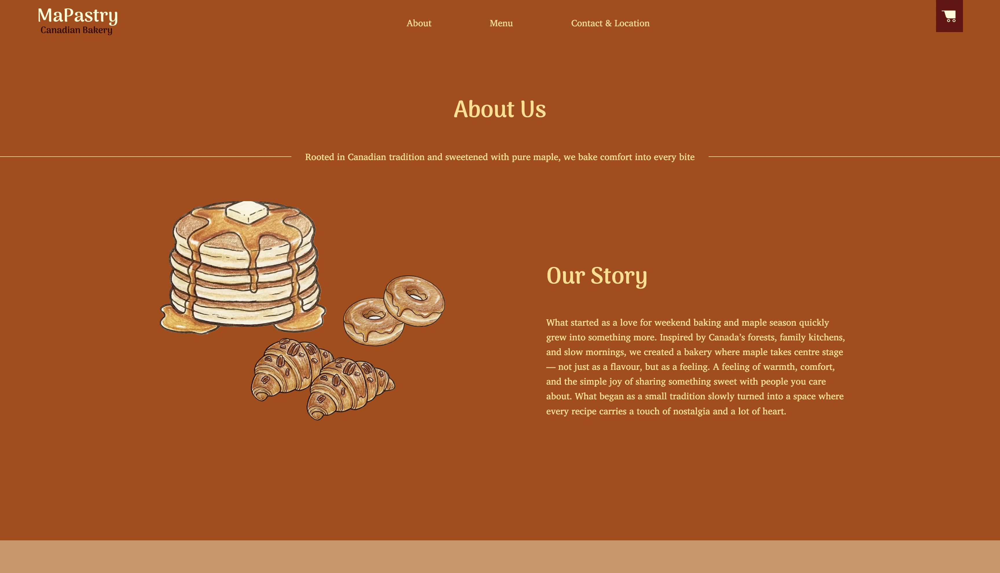
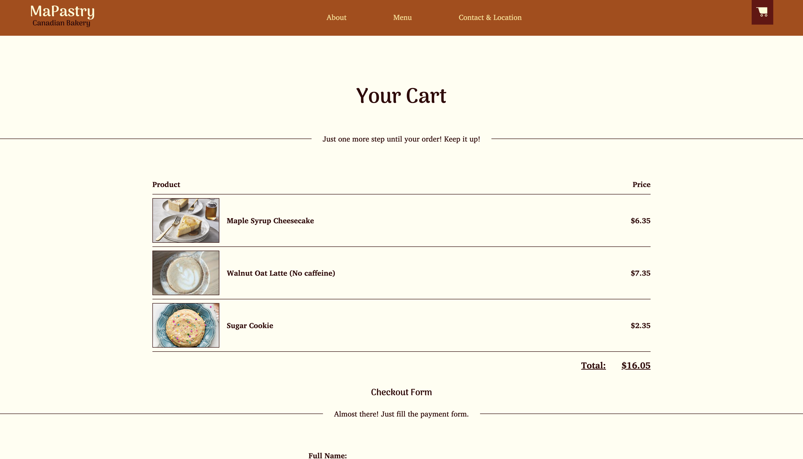
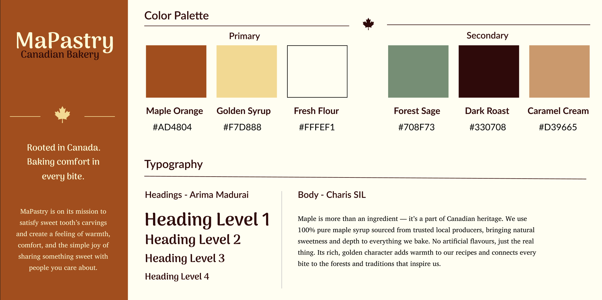
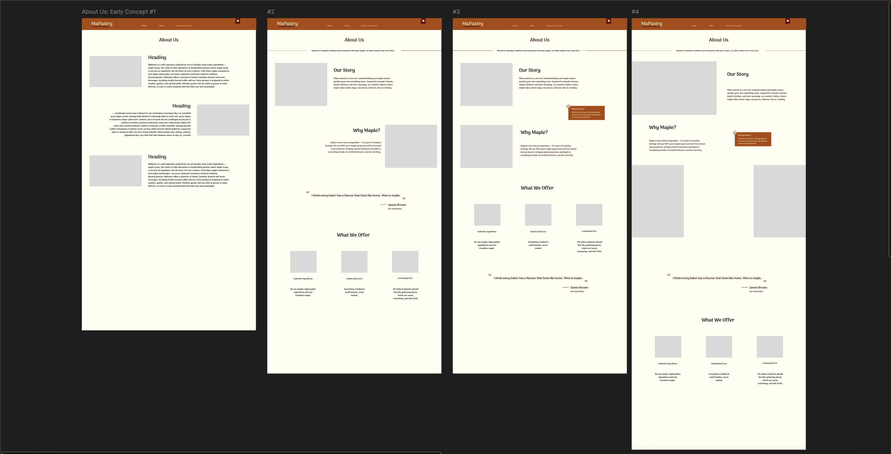
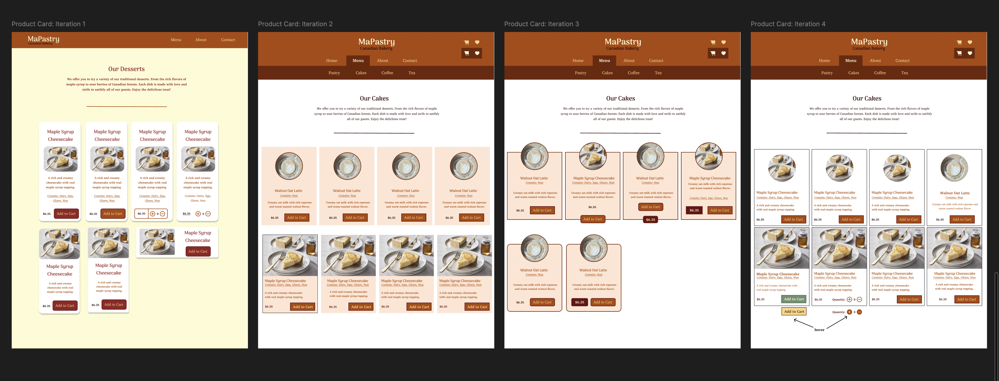

MaPastry — Bakery Website
Intro
MaPastry is a concept website for a Canadian bakery where maple syrup is the signature ingredient across the menu. I designed and coded the full website in HTML and CSS, focusing on making the brand feel welcoming and handcrafted while keeping the shopping and browsing experience simple and clear.





Design System
I built the brand identity around the bakery's core ingredient. The color palette is built with warm tones inspired by maple syrup, baked pastry, and natural materials. My goal was to create a color palette that feels edible and creates an inviting atmosphere around the brand.
I paired two fonts: Arima Madurai for headings with Charis SIL for body text: one expressive and rounded, bringing warmth and character, while the other is clean and easy to scan.

Process
Before moving to code, I explored multiple directions in Figma. Early iterations focused on finding the right balance between the brand's warm, handcrafted feel and a layout that keeps the browsing experience comfortable. I tested different navigation styles, page structures, and hero layouts before deciding on a direction that let the food photography get the most attention and do the heavy lifting.

Four layout concepts for the About page, progressing from text-heavy to a more visual, section-based structure.

Product card iterations exploring different arrangements of images, pricing, allergen info, and hover interactions.
The menu product cards went through several rounds of iteration. I experimented with different arrangements of images, pricing, allergen info, and the Add to Cart interaction, including hover states.
Final Design
The final website includes five main pages: a homepage, a menu with product cards, an About page telling MaPastry's story, a checkout page, and a Contact & Feedback page. Each product also has its own dedicated detail page. I coded everything in HTML and CSS, refining spacing, hierarchy, and interactive details like the cart and form validation to make the experience feel polished throughout.


Challenges
The About page was one of the hardest parts to figure out because there was no obvious structure to follow. I wanted it to do more than just introduce the bakery. I also wanted to show the process behind maple syrup production, so customers could understand how the core ingredient is made and how it ends up in the pastry they eat. The challenge was combining both of these aspects into one complete story.
On the development part, I found the hero image tricky to implement without breaking the layout or distorting image. It took multiple attempts, referencing guides, and editing the image itself before it worked the way I wanted. Making the website responsive also took significant effort. For example, website’s footer has multiple elements and buttons that needed several layout adjustments to appear properly on mobile and tablet
Reflection
This project taught me a lot about what a real business website actually needs. Which pages matter most? What content deserves priority? Throughout the process, I also kept asking myself: if MaPastry were a real company, what would a potential customer need to find on this website?
It was also my biggest solo development project so far. Working with longer code structures taught me to write cleaner, more organized CSS, while also learning some JavaScript along the way. On the design side, I spent time building a color palette and font pairing that would not just look nice, but would help a user understand the brand’s identity just by browsing the pages.
If I continue working on this project or take on something similar, I want to spend more time exploring page layouts. I am particularly interested in the main and About pages in terms of how to make a brand’s story more engaging through better storytelling and interactive elements that make the user feel part of the process.